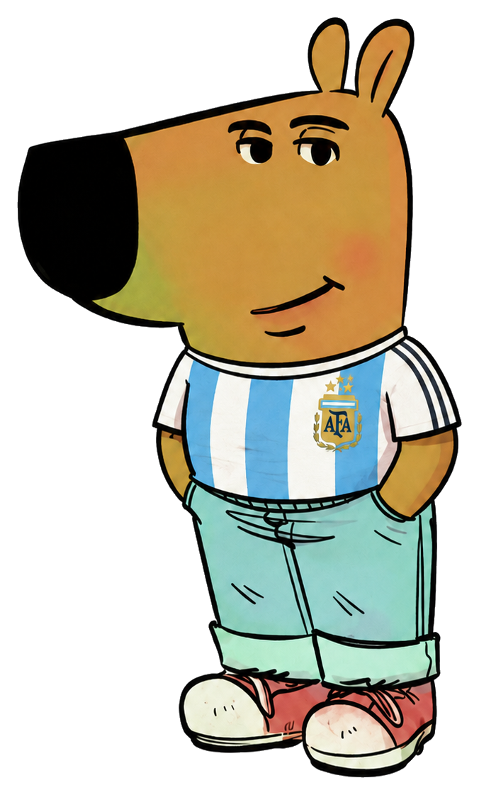

Quiz argentino
✈️ Colombia → Buenos Aires

Guía oficialEl mejor viaje de tu vida comienza en:
Una cuenta regresiva, pistas secretas y una mini inmersión cultural antes de aterrizar.
--Días
--Horas
--Min
--Seg
Calculando aventura...
0% completadoSeptiembre 2026
Los días del viaje aparecen bloqueados hasta que se revelen las actividades. Los demás días quedan en otro color.
Fuera del viaje
Día bloqueado
Con algo desbloqueado
Calendario bloqueado
Se ven los días y la pista asociada, pero no el plan hasta que se desbloquee.
Cultura diaria
Un poquito de Argentina cada día, sin hacerlo clase eterna.
Lunfardo del día
Bondi
Colectivo, bus.
Ejemplo
Canción del día
Canción
Una canción para ir entrando en clima.
EscucharGeografía argentina
Mapa, provincias, capitales y un dato diario para ubicarse mejor antes de aterrizar.
Mapa con provincias y capitales
Argentina completa, de norte a sur

El mapa no cargó en este navegador. Las provincias y capitales están abajo.
Islas Malvinas
Capital: Puerto Argentino
Mapa real de Argentina con provincias. Las tarjetas de abajo tienen el detalle completo de capitales.
Dato geográfico del día
Mapa mental
Cada día aparece una coordenada nueva.
Provincias y capitales
Para no mirar el mapa como si fuera otro continente
Argentina vs Colombia
Diferencias simpáticas para llegar con radar cultural.
Tema del día
Argentina
Colombia
Historia argentina del día
Un dato histórico distinto cada día, cortito y sin clase eterna.
Historia
Dato histórico
Cada día aparece un episodio diferente.
Easter eggs
Pistas que se desbloquean a medida que se acerca el viaje.
Buenos Aires en fotos
Una postal distinta cada día para ir entrando en clima.
Mensaje para Dani
Un espacio para dejar un recuerdo, una nota o una teoría del viaje.
Bitácora privada
Escribí algo para guardar este momento
Para que Dani lo vea, hacé click en “Enviar” y se abre el mail listo para mandárselo.